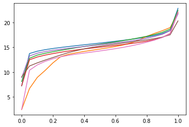
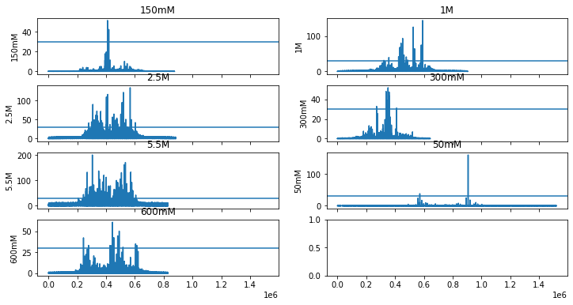

3D Analysis tutorial¶
Trajectory operations¶
Initiate the trajectory object, which will be used to make further actions.
[77]:
importlib.reload(main)
importlib.reload(Trajectory)
importlib.reload(tools)
trajectories=main.Trajectory.Trajectory(project_systems, results=results)
Extract state frames¶
Define the frames belonging to a set of states across all trajectories. A dataframe of discretized trajectories must be given.
[80]:
#stateLabels=['SB', 'ESB', 'PB', 'PSB', 'PEB', 'PESB', 'AB', 'ASB', 'AEB', 'AESB', 'APSB', 'APESB']
#states=[3, 7, 9, 11, 13, 15, 17, 19, 21, 23, 25, 27, 31]
#stateLabels=['SB', 'ESB', 'PB', 'PSB', 'PESB', 'AB', 'ASB', 'APSB', 'APESB']
#states=[3,7,9,11,15,17,19,27,31]
stateLabels=['PSB']
states=[11]
extracted_frames=trajectories.extractFrames_by_iterable(combinatorial, iterable=states, feature='nac')
Density Maps¶
NOTE: Compute intensive, using previously stored files.
[81]:
#of extracted frames
densities, stats=trajectories.DensityMap_frames(frames=extracted_frames, level=2, dists=[('resid 290 and name NZ', 'resid 145 and name OD1')])
Level: 150mM
Iterable: 11
Density file found
[ 7.21 13.752 14.221 14.528 14.772 14.978 15.1641 15.346
15.521 15.693 15.871 16.051 16.237 16.428 16.63 16.853
17.11 17.409 17.803 18.41165 22.894 ]
Cluster file found
Level: 1M
Iterable: 11
Density file found
[ 2.427 6.66945 8.9247 10.329 11.8616 13.12625 13.5937 13.903
14.183 14.416 14.654 14.899 15.1694 15.486 15.904 16.487
17.231 17.827 18.37 19.00155 21.959 ]
Cluster file found
Level: 2.5M
Iterable: 11
Density file found
[ 8.096 12.793 13.434 13.80085 14.1068 14.39 14.66 14.936
15.1786 15.405 15.628 15.873 16.11 16.37035 16.6333 16.928
17.237 17.599 18.0371 18.687 22.488 ]
Cluster file found
Level: 300mM
Iterable: 11
Density file found
[ 7.239 12.488 13.053 13.435 13.742 14.014 14.261 14.483 14.6816
14.861 15.039 15.2152 15.3904 15.571 15.7698 15.992 16.251 16.569
17.017 17.801 22.109 ]
Cluster file found
Level: 5.5M
Iterable: 11
Density file found
[ 8.864 13.2574 13.8234 14.14335 14.4078 14.61225 14.8101 14.998
15.172 15.36125 15.5475 15.72395 15.908 16.088 16.3039 16.5325
16.8562 17.20165 17.6533 18.3679 21.774 ]
Cluster file found
Level: 50mM
Iterable: 11
Density file found
[ 9.039 11.22925 11.866 12.42925 12.945 13.457 13.955 14.335
14.699 14.996 15.2435 15.473 15.675 15.882 16.0825 16.3
16.519 16.773 17.068 17.546 20.347 ]
Cluster file found
Level: 600mM
Iterable: 11
Density file found
[ 2.45 10.371 11.4504 12.163 12.691 13.095 13.398 13.638 13.852
14.06 14.273 14.498 14.742 15.008 15.307 15.647 16.0402 16.47
16.9966 17.735 22.197 ]
Cluster file found

[83]:
stats_=stats
parameters=['min', 'max', 'mean', 'std']
level_unique=stats_.columns.get_level_values(level=0).unique()
print(stats_)
fig, ax=plt.subplots(4,2, figsize=(12,6), sharex=True)
axes=ax.flat
for p, ax in zip(level_unique, axes):
#print(p, ax)
df_level=stats_.loc[:, p]
for it in df_level.columns.values:
#print(df_level[it])
ax.plot(df_level.index.values, df_level[it])
ax.set_ylabel(p)
#ax.set_yscale('log')
ax.set_title(p)
ax.axhline(y=30)
plt.show()
level 150mM 1M 2.5M 300mM 5.5M 50mM 600mM
iterable 11 11 11 11 11 11 11
0 0.0 0.0 0.0 0.0 0.0 0.0 0.0
1 0.0 0.0 0.0 0.0 0.0 0.0 0.0
2 0.0 0.0 0.0 0.0 0.0 0.0 0.0
3 0.0 0.0 0.0 0.0 0.0 0.0 0.0
4 0.0 0.0 0.0 0.0 0.0 0.0 0.0
... ... ... ... ... ... ... ...
1520410 NaN NaN NaN NaN NaN 0.0 NaN
1520411 NaN NaN NaN NaN NaN 0.0 NaN
1520412 NaN NaN NaN NaN NaN 0.0 NaN
1520413 NaN NaN NaN NaN NaN 0.0 NaN
1520414 NaN NaN NaN NaN NaN 0.0 NaN
[1520415 rows x 7 columns]
